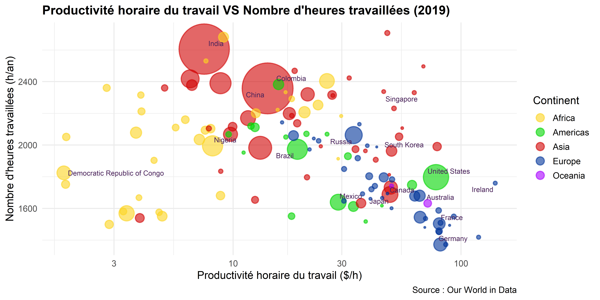

Quelle relation existe-t-il entre le volume de travail et la productivité horaire ?
\[ Productivité\ horaire = \frac{PIB}{Nombre\ total\ d'heures\ travaillées} \] \[Heures\ travaillées\ : Moyenne\ annuelle\ par\ travailleur\]

| Continent | r |
|---|---|
| Africa | 0.39 |
| Americas | -0.51 |
| Asia | -0.06 |
| Europe | -0.72 |
| Oceania | -1.00 |